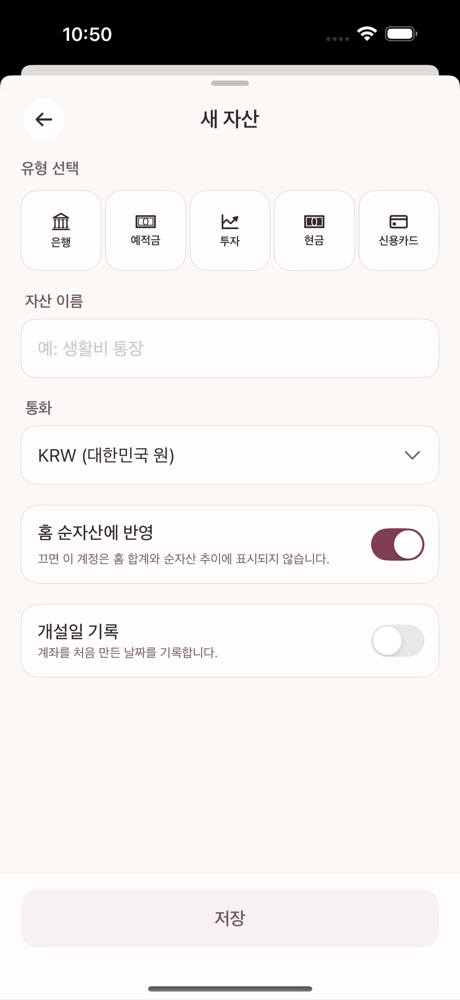
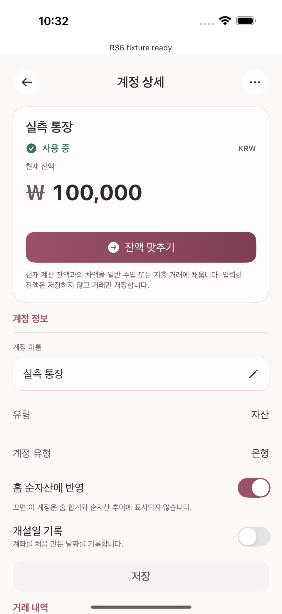

계정은 돈이 실제로 있거나 빚이 잡히는 위치다(2장 참고). 이 장에서는 새 계정을 만들고 시작 잔액을 맞추는 방법을 다룬다.
새 계정을 추가할 때 다음 다섯 유형 중 하나를 고른다.
| 유형 | 예시 | 잔액의 의미 |
|---|---|---|
| 은행 | 입출금 통장, 급여 계좌 | 실제 보유 현금 |
| 예적금 | 정기예금, 적금 | 만기까지 묶인 저축 자산 |
| 투자 | 증권 계좌 | 평가액이 아닌 실제 입출금 기준 자산 |
| 현금 | 지갑, 비상금 | 실제 보유 현금 |
| 신용카드 | 신용카드 | 결제한 만큼 쌓이는 부채(빚) — 자산이 아니다 |
신용카드는 다른 넷과 성격이 다르다. 카드를 쓸수록 "이 카드로 갚아야 할 금액"이 늘어나며, 결제일에 대금을 갚으면 그 부채가 줄어든다.
화면 제목은 새 자산이고, 이름을 넣는 자산 이름 필드가 공통으로 있다.

새 계정을 만들 때 지금 그 계좌·카드의 실제 잔액을 입력해두면, 그 시점 잔액을 만들기 위한 거래 하나가 자동으로 생긴다. 입력 필드 이름은 유형에 따라 다르다.
이 값은 그대로 저장되는 숫자가 아니라 시작 시점을 맞추기 위한 거래를 만드는 것이다. 이후 실제 거래가 쌓이면 화면에 표시되는 현재 잔액은 그 거래들로부터 항상 다시 계산된다.
은행 앱과 타미오의 잔액이 조금씩 어긋나는 경우(누락된 거래, 반올림 등) 별도 화면을 열 필요 없이 계정 상세 화면 맨 위에 보이는 "현재 잔액" 숫자를 직접 눌러 실제 값으로 고친다. 값을 바꾸면 차액 거래 계속 버튼이 나타나고, 그걸 눌러야 차액만큼의 보정 거래가 하나 생겨 잔액을 실제와 같게 만든다. 차액이 0이면 아무 거래도 만들어지지 않는다.

일반 계좌·카드·현금·투자 계정에는 "종료"나 "보관" 메뉴가 없다 — 계정 상세의 관리 메뉴(⋯)에는 이름 변경과 삭제만 있다. 더는 쓰지 않는 계정은 그대로 목록에 남겨 둬도 문제가 없고, 정말 지우고 싶다면 14장에서 다루는 삭제(거래 유무에 따라 동작이 다르다)를 사용한다. 예적금 계정만 예외로, 만기나 중도 해지 시 원금·이자를 입금 처리한 뒤 종료하는 별도 흐름을 계정 상세에서 제공한다.